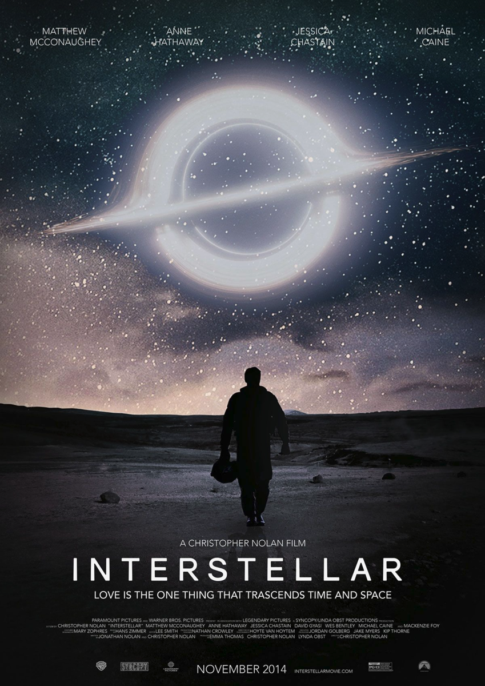
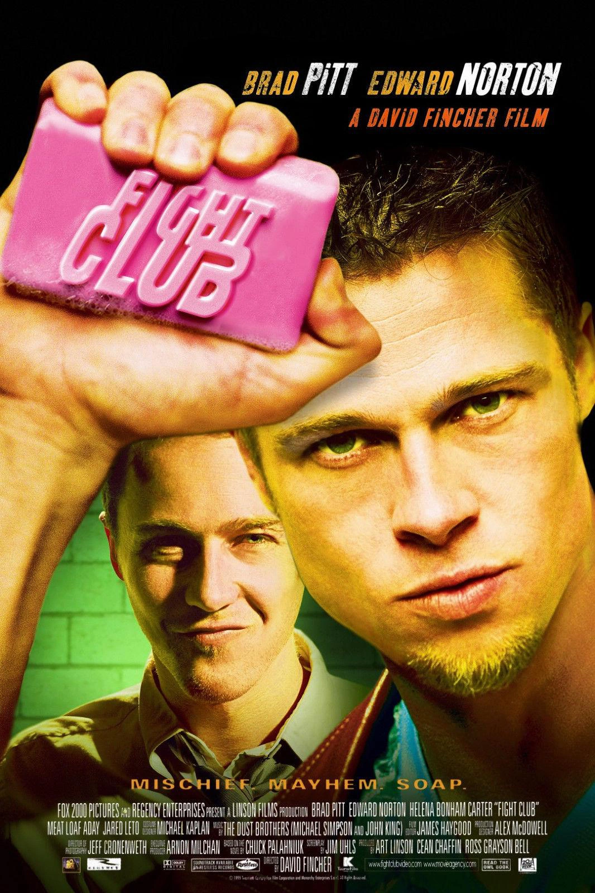

Интерстеллар
 ПодробнееЗемля умирает. Бывший пилот Купер ведёт команду через червоточину в поисках нового дома для человечества. Но в космосе время и реальность работают иначе, а ответ может скрываться в прошлом.
Эпичная научная фантастика от Нолана с Макконахи и Хэтэуэй — о любви, времени и спасении человечества
Бойцовский клуб
 ПодробнееОфисный раб встречает своего бунтующего двойника. Подпольные драки, анархия, взрывы — и жуткое открытие.
Культовая психодрама Финчера.
Побег из Шоушенка
 Подробнее
Подробнее
Невиновный банкир Энди 20 лет готовит побег из жестокой тюрьмы. Гениальный план, терпение и надежда против системы.
Культовая драма о свободе.
Аватар
Бывший морпех Джейк Салли получает шанс снова ходить, внедряясь в тело гибрида аборигенов Пандоры. Но, влюбившись в местную принцессу, он встаёт на сторону коренного народа против земных захватчиков.
Эпичный визуальный шедевр Кэмерона о любви, природе и войне.